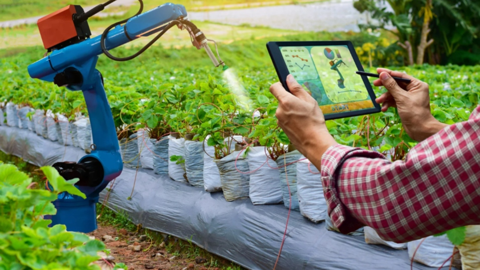

Smart farming solutions for better harvests and higher profits.
We help farmers efficiently grow produce using real-time data, smart tracking tools,
and insights to boost their productivity and income.
Main Features
Explore our innovative tools designed to enhance productivity, reduce costs, and optimize your farming practices with cutting-edge technology.
Track Production
Monitor crop growth, yield metrics, and production timelines in real-time. This tool provides detailed analytics on soil health, weather impacts, and harvest predictions to help you track and improve overall farm output efficiently.

Smart Cost Insights
Gain actionable insights into operational costs with automated expense tracking and budgeting tools. Analyze inputs like seeds, fertilizers, and labor to identify savings opportunities and maximize profitability.
Optimizing Your Farming
Leverage AI-driven recommendations to optimize irrigation, pest control, and resource allocation. This feature helps streamline farming processes, reduce waste, and boost sustainability for long-term success.
Why Choose SmartProduce?
Our system helps farmers monitor their produce, understand expenses,
and maximize profits through accurate real-time data. GreenSense provides
modern tools for monitoring crops, income, and reducing losses.
Information / Details
Additional structured information such as benefits, processes, and detailed descriptions
about how SmartProduce helps farmers increase productivity and efficiency.
Better Decision Making
Access actionable insights that help farmers choose the best crop strategies.
Efficient Monitoring
Real-time tracking tools make crop monitoring faster, easier, and more reliable.
Increased Profit
Optimize production costs and grow produce that results in higher returns.